Certains programmes se trouvent dans examples/recur.
On veut énumérer les éléments d’une liste.
Pour cela on écrit le premier élément et on énumère la liste
privée de son premier élément. On s’arrête quand la liste est vide.
On écrit :
enumere(l):={
if (l==[]) return 0;
print(l[0]);
enumere(tail(l));
}
On tape :
enumere(["jean","paul","pierre"])
On obtient, en écriture bleue, dans la zone des résultats
intermédiaires :
"jean"
"paul"
"pierre"
Étant donné un mot de n lettres, on veut écrire n lignes :
la première ligne sera constituée par la première lettre du mot,
la deuxième ligne sera constituée par les deux premières lettres...,
la dernière ligne sera constituée par le mot tout entier.
On écrira :
mots(m) de façon récursive.
On peut se servir de la fonction size(m) de
Xcas qui renvoie le nombre de lettres du mot m, et de la fonction
suppress(m,k) de Xcas qui renvoie le mot m privé de sa
k-ième lettre (k=0.. size(m)-1).
On tape :
saufdernier(m):={
return suppress(m,size(m)-1);
}
puis
mots(m):={
if (size(m)==0) return 0;
mots(saufdernier(m));
print(m);
}
Exercice
Comment modifier le programme précédent pour avoir :
Étant donné un mot de n lettres, on veut écrire n lignes :
la première ligne sera constituée par le mot tout entier,
la deuxième ligne sera constituée par le mot privé de sa
première lettre...,
la dernière ligne sera constituée par la première lettre du mot.
Réponse
On peut se servir de la fonction tail(m) de
Xcas qui renvoie l le mot m privé de sa première lettre.
motex(m):={
if (size(m)==0) return 0;
print(m);
motex(tail(m));
}
Étant donné une phrase, on veut écrire cette phrase en l’écrivant de
droite à gauche.
On écrira :
palindrome(s) de façon récursive :
il faut rajouter la première lettre de la phrase à la fin du
palindrome de la phrase privée de sa première lettre.
On tape :
palindrome(ph):={
local s;
if (s==0) return ph;
s:=size(ph)-1;
return concat(palindrome(tail(ph)),ph[0]);
}
ou encore :
il faut rajouter la dernière lettre de la phrase devant le
palindrome de la phrase privée de sa dernière lettre.
On tape :
saufdernier(m):={
return suppress(m,size(m)-1);
}
palindrome(ph):={
local s;
if (s==0) return ph;
s:=size(ph)-1;
return concat(ph[s],palindrome(saufdernier(ph)));
}
Un entier n est un palindrome s’il est identique à son palindrome qui est
le nombre obtenu en écrivant n de droite à gauche.
Par exemple 12321 est un palindrome.
Pour tout entier n , on considère l’algorithme suivant :
Par exemple : 687,687+786=1473,1473+3741=5214,5214+4125=9339.
On appelle nombre palindromique d’un entier n le nombre Npal(n) d’étapes
nécessaire pour obtenir unpalindrome.
Par exemple : Npal(12321)=0, Npal(687)=3.
On appelle valeur palindromique d’un entier n la valeur Vpal(n) du palindrome
final.
Par exemple : Vpal(12321)=12321, Vpal(687)=9339.
palind(n):={
local r,m;
m:=0;
tantque n>=10 faire
n,r:=iquorem(n,10);
m:=10*m+r;
ftantque;
m:=10*m+n;
retourne m;
}:;
On tape :vnpalind(n,p):={
local j,m,n0;
m:=palind(n);
j:=0;
n0:=n;
tantque n!=m and j<p faire
n:=n+m;
j:=j+1;
m:=palind(n);
ftantque;
si j==p and m!=palind(n+m) alors return [n0]; fsi;
return [n0,m,j];
}:;
On tape :lvnpalind():={
local L,n;
L:=NULL;
pour n de 1 jusque 100 faire
L:=L,vnpalind(n,300);
fpour;
retourne L;
}:;
On tape :[1,1,0],[2,2,0],[3,3,0],[4,4,0],[5,5,0],[6,6,0], [7,7,0],[8,8,0],[9,9,0],[10,11,1],[11,11,0], [12,33,1],[13,44,1],[14,55,1],[15,66,1],[16,77,1], [17,88,1],[18,99,1],[19,121,2],[20,22,1],[21,33,1], [22,22,0],[23,55,1],[24,66,1],[25,77,1],[26,88,1], [27,99,1],[28,121,2],[29,121,1],[30,33,1],[31,44,1], [32,55,1],[33,33,0],[34,77,1],[35,88,1],[36,99,1], [37,121,2],[38,121,1],[39,363,2],[40,44,1],[41,55,1], [42,66,1],[43,77,1],[44,44,0],[45,99,1],[46,121,2], [47,121,1],[48,363,2],[49,484,2],[50,55,1],[51,66,1], [52,77,1],[53,88,1],[54,99,1],[55,55,0],[56,121,1], [57,363,2],[58,484,2],[59,1111,3],[60,66,1],[61,77,1], [62,88,1],[63,99,1],[64,121,2],[65,121,1],[66,66,0], [67,484,2],[68,1111,3],[69,4884,4],[70,77,1],[71,88,1], [72,99,1],[73,121,2],[74,121,1],[75,363,2],[76,484,2], [77,77,0],[78,4884,4],[79,44044,6],[80,88,1],[81,99,1], [82,121,2],[83,121,1],[84,363,2],[85,484,2],[86,1111,3], [87,4884,4],[88,88,0],[89,8813200023188,24],[90,99,1], [91,121,2],[92,121,1],[93,363,2],[94,484,2],[95,1111,3], [96,4884,4],[97,44044,6],[98,8813200023188,24],[99,99,0], [100,101,1]
pbvnpalind():={
local L,n;
L:=NULL;
pour n de 1 jusque 1000 faire
si vnpalind(n,300)==[n] alors L:=L,n fsi;
fpour;
retourne L;
}:;
On tape :tracevnpalind(n,p):={
local L,k,m;
L:=n;
m:=palind(n);
k:=0;
tantque n!=m and k<p faire
n:=n+m;
k:=k+1;
L:=L,n
m:=palind(n);
ftantque;
return L;
}:;
On tape :On a donc zk==a*rk−1exp(i(k−1)π/3)exp(iπ/3)==aexp(iπ/3)zk−1
On peut faire soit un programme itératif, soit un programme récursif.
On tape pour le programme itératif :
segmenti(a,z0,p):={
local L,k;
point(z0);
L:=NULL;
pour k de 1 jusque p faire
L:=L,segment(z0,a*z0*exp(i*pi/3));
z0:=a*z0*exp(i*pi/3);
fpour;
retourne L;
}
:;
Pour le programme récursif :
On peut décider d’avoir le dessin récursif seulement dans l’écran
DispG : le programme est plus simple car toutes les instructions
graphiques sont exécutées dans cet écran. On renvoie 1 pour que
l’on puisse vérifier que la procédure s’est bien exécutée.
On tape :
segmentg(a,z0,p):={
point(z0);
si p>0 alors
segment(z0,a*z0*exp(i*pi/3));
segmentg(a,a*z0*exp(i*pi/3),p-1);
fsi;
retourne 1;
}
:;
Ou bien on met les différentes instructions graphiques à réaliser dans
une liste L.
On tape :
segmentr(a,z0,p):={
local L;
si p==0 alors retourne point(z0); fsi;
L:=segment(z0,a*z0*exp(i*pi/3)),segmentr(a,a*z0*exp(i*pi/3),p-1);
retourne L;
}
:;
Puis on tape :
segmenti(0.8, 20, 30) ou
segmentg(0.8, 20, 30) ou
segmentr(0.8, 20, 30)
spirali(x0,k,n):={
local k,L;
pour k de 1 jusque n faire
L:=L,segment(x0,i*k*x0);
x0:=i*k*x0;
}
retourne L;
}:;
On tape un programme récursif :
spiralr(x0,k,n):={
si n<=0 alors retourne point(x0); fsi;
retourne segment(x0,i*k*x0),spiralr(i*k*x0,k,n-1);
}:;
maison(A,B,n):={
local C,D,E,L;
A:=evalf(A); B:=evalf(B);
si n<=0 alors retourne segment(A,B); fsi;
C:=rotation(A,pi/2,B);
E:=rotation(B,-pi/2,A);
D:=similitude(C,sqrt(2)/2,pi/4,E);
L:=segment(A,C),segment(B,E);
L:=L,maison(C,D,n-1),maison(D,E,n-1);
retourne L;
}:;
On peut transformer cet exercice en un exercice sur les complexes en demandant
de calculer les affixes de C,D,E en fonction des affixes de A et B.
On tape un programme récursif :
maisonee(A,B,n):={
local C,D,E,L,za,zb,zc,zd,ze;
si n<=0 alors retourne segment(A,B); fsi;
za:=affixe(A);
zb:=affixe(B);
zc:=normal(za+i*(zb-za));
ze:=normal(zb+i*(zb-za));
zd:=normal(3*i*(zb-za)/2+(za+zb)/2);
C:=point(zc);
E:=point(ze);
D:=point(zd);
L:=segment(A,C),segment(B,E);
L:=L,maisonee(C,D,n-1),maisonee(D,E,n-1);
retourne L;
}:;
On veut réaliser le dessin récursif dont on a mis ci-dessous les premières étapes (profondeur 0,1 et 2):
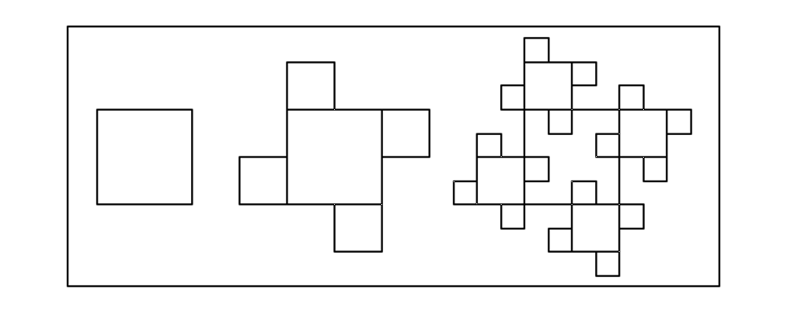
On peut décider d’avoir le dessin récursif seulement dans l’écran
DispG : le programme est plus simple car toutes les instructions
graphiques sont exécutées dans cet écran.
On appelle cette procédure carresg(a,d,f) où a est l’affixe
du sommet en bas à gauche du grand carré, d est la longueur de
son côté et f donne la longueur du côté du plus petit carré.
carresg(a,d,f) renvoie 1 pour que l’on puisse vérifier que la
procédure s’est bien exécutée.
On tape :
carresg(a,d,f):={
si d>=f alors
carre(a,a+d);
carresg(a-d/2,d/2,f);
carresg(a+i*d,d/2,f);
carresg(a+d/2-i*d/2,d/2,f);
carresg(a+d+i*d/2,d/2,f);
fsi;
retourne 1;
}:;
On tape :
carresg(0,40,2)
L’écran DispG s’ouvre et l’on voit le dessin se faire....
On met les différentes instructions graphiques à réaliser dans une liste
L. On appelle cette procédure carres(a,d,f) où a est l’affixe
du sommet en bas à gauche du grand carré, d est la longueur de
son côté et f donne la longueur du côté du plus petit carré.
carresg(a,d,f) renvoie la liste L.
On tape :
carres(a,d,f):={
local L;
si d<f alors retourne NULL fsi;
L:=carre(a,a+d),carres(a-d/2,d/2,f),carres(a+i*d,d/2,f),
carres(a+d/2-i*d/2,d/2,f),carres(a+d+i*d/2,d/2,f);
retourne L;
}
:;
On tape : carres(0,40,2)
On peut aussi choisir comme paramètre la profondeur n du dessin récursif au lieu de f. On tape :
carren(a,d,n):={
local L;
si n=<0 alors retourne NULL fsi;
L:=carre(a,a+d),carren(a-d/2,d/2,n-1),carren(a+i*d,d/2,n-1),
carren(a+d/2-i*d/2,d/2,n-1),carren(a+d+i*d/2,d/2,n-1);
retourne L;
}
:;
On tape : carren(0,40,4)
On veut réaliser le dessin récursif dont on a mis ci-dessous les premières étapes (profondeur 0,1,2 et 3) :
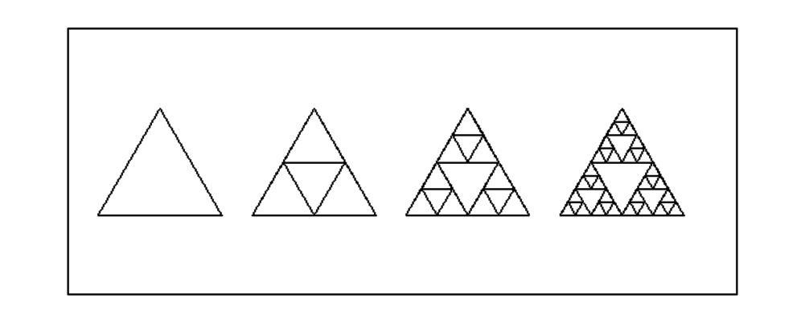
On peut décider d’avoir le dessin récursif seulement dans l’écran
DispG : le programme est plus simple car toutes les instructions
graphiques sont exécutées dans cet écran.
On appelle cette procédure triang(a,d,f) où a est l’affixe
du sommet en bas à gauche du grand triangle, d est la longueur de
son côté et f donne la longueur du côté du plus petit triangle.
triang(a,d,f) renvoie 1 pour que l’on puisse vérifier que la
procédure s’est bien exécutée.
On tape :
triang(a,d,f):={
si d>=f alors
triangle_equilateral(a,a+d);
triang(a,d/2,f);
triang(a+d/4+i*d*sqrt(3.)/4,d/2,f);
triang(a+d/2,d/2,f);
fsi;
retourne 1;
}:;
On tape :
triang(0,40,2)
L’écran DispG s’ouvre et l’on voit le dessin se faire....On met les différentes instructions graphiques à réaliser dans une liste.
On appelle cette procédure triangles(a,d,f) où a est l’affixe
du sommet en bas à gauche du grand triangle, d est la longueur de
son côté et f donne la longueur du côté du plus petit triangle.
On tape :
triangles(a,d,f):={
local L;
si d<f alors retourne NULL fsi;
L:=triangle_equilateral(a,a+d),triangles(a,d/2,f),
triangles(a+d/4+i*d*sqrt(3.)/4,d/2,f),triangles(a+d/2,d/2,f);
retourne L;
}
:;
On tape : triangles(0,40,2)
On peut aussi choisir comme paramètre la profondeur n du dessin récursif au lieu de f. On tape :
trianglen(a,d,n):={
local L;
si n<0 alors retourne NULL fsi;
L:=triangle_equilateral(a,a+d),trianglen(a,d/2,n-1),
trianglen(a+d/4+i*d*sqrt(3.)/4,d/2,n-1),trianglen(a+d/2,d/2,n-1);
retourne L;
}
:;
On tape : trianglen(0,40,4)
Écrire un programme qui réalise le dessin récursif dont on a mis ci-dessous les premières étapes (profondeur 0, 1 et 2) :
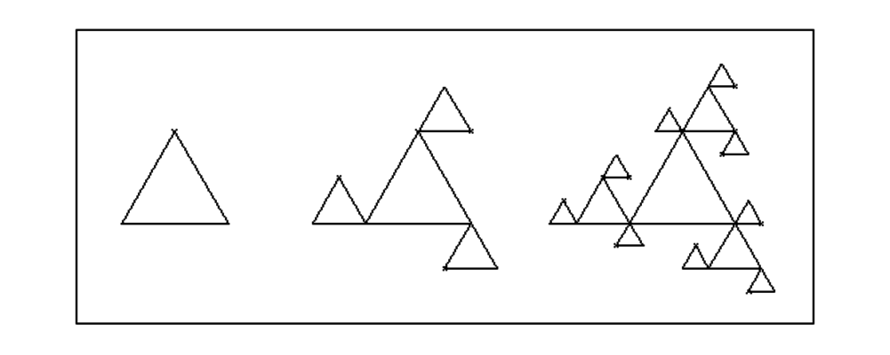
On tape :
triequi(A,B,n):={
local C,L,A1,B1,C1;
L:=triangle_equilateral(A,B,C);
si n>0 alors
A1:=homothetie(C,-0.5,A);
B1:=homothetie(A,-0.5,B);
C1:=homothetie(B,-0.5,C);
L:=L,triequi(A1,C,n-1);
L:=L,triequi(B1,A,n-1);
L:=L,triequi(C1,B,n-1);
fsi;
retourne L;
}:;
On tape : triequi(0,1,5)
On obtient :
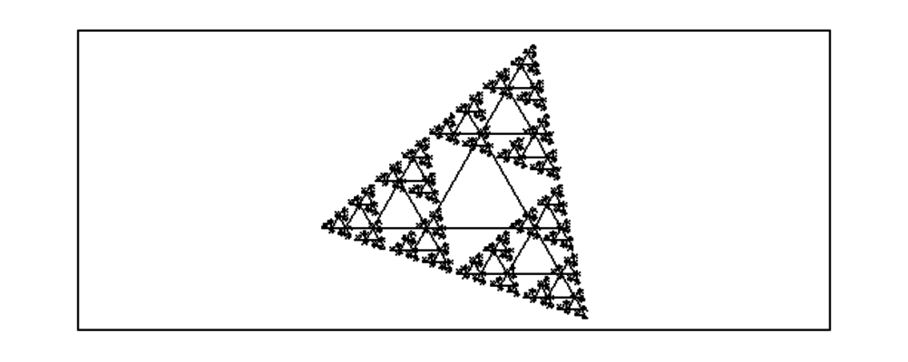
On tape : triequi(0,1+0.35*i,5)
On obtient :
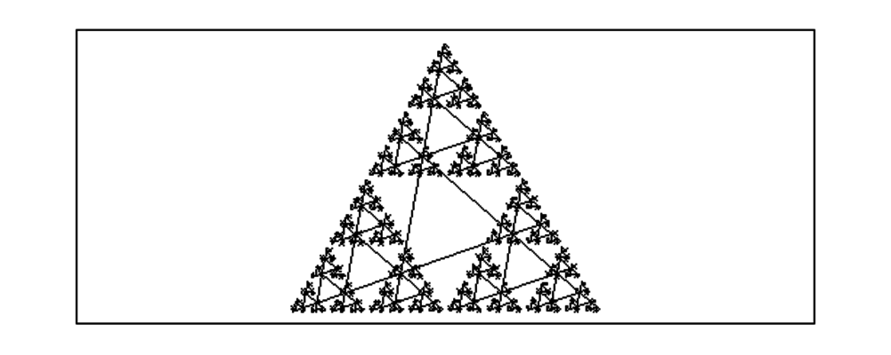
À partir d’un triangle équilatèral direct ABC on construit les points
A1,B1,C1 vérifiant :
AA1=4/3AB
BB1=4/3BC
CC1=4/3CA
Interprétez A1 comme le barycentre de A,a et B,b.
Montrer que le triangle A1B1C1 estéquilatèral.
On recommence la même construction à partir de A1B1C1.
Écrire la procédure récursive qui réalise le dessin des n triangles
obtenus par cette construction (en tout n+1 triangles ABC + les autres).
On a :
AA1=4/3AB−1/3AA
Donc A1 est le barycentre de A,−1 et B,4.
Donc B1 est le barycentre de B,−1 et C,4
Donc C1 est le barycentre de C,−1 et A,4.
La rotation r de centre O, le centre de ABC, et d’angle 2π/3
transforme A en B, B en C et C en A donc r transforme le
barycentre de A,−1 et B,4 en le barycentre de B,−1 et C,4 c’est à dire transforme A1 en B1 et r transforme le
barycentre de B,−1 et C,4 en le barycentre de C,−1 et A,4 c’est à dire transforme B1 en C1.
Donc le triangle A1B1C1 estéquilatèral.
On tape dans l’éditeur de programmes :
triangles(A,B,n):={
local L,C;
L:=triangle_equilateral(A,B,C);
si n>0 alors
A:=barycentre([A,B],[-1,4]);
B:=barycentre([B,C],[-1,4]);
L:=L,triangles(A,B,n-1);
fsi;
return L;
}:;
puis on compile avec F9 et dans une ligne de commande, on tape :
triangles(point(0),point(1),5)
On obtient :
Trois insectes partent, des sommets d’un triangle
équilatéral A,B,C en direction de son voisin (C regarde B. B
regarde C. A regarde C). À chaque étape de leur
marche les 3 insectes forment un triangle équilatéral.
Dessiner les trajectoires des 3 insectes en résolvant une équation
différentielle ou un système d’équations différentielles.
On peut faire une simulation de la situation en supposant que chaque insecte :
- regarde son voisin ce qui lui donne sa direction, puis,
- avance dans cette direction d’une longueur proprortionnelle au côté du
triangle, puis ,
- regarde son voisin ce qui lui donne sa nouvelle direction etc...
Faire un programme qui dessine les triangles étapes de cete marche.
Refaire le même exercice en remplaçant le triangle
équilatéral A,B,C par un triangle rectangle isocèle.
Résolution de 3 équations différentielles
Les trois insectes ont des trajectoires qui se déduisent l’une de l’autre
par une rotation de centre G le centre de gravité du triangle et d’angle
−2*π/3.
Si zA est l’affixe du point A et zB celle du point B...,
on a :
zA′=zC−zA
zB′=zA−zB
zC′=zB−zC
donc zA′+zB′+zC′=0 et donc
zA+zB+zC=cste=1+1/2+i√3 /2=3*zG
On a :
zC−zG=exp(−2*π/3)(zA−zG)
(zA−zG)′=zC−zA=(zC−zG)−(zA−zG)=(exp(−2*π/3)−1)(zA−zG).
zG=−(3+i √3)/6
au temps t=0 on a :
zA=0, zB=1, zC=1/2+i √3/3
On tape (on suppose que l’on a coché complexe dans la configuration du
CAS) :
triangle_equlateral(0,1)
zG:=(3+i*sqrt(3))/6
SA:=simplify(desolve([diff(z(t),t)=(exp(-2*i*pi/3)-1)*(z(t)-zG),
z(0)=0],[t,z]))
SB:=simplify(desolve([diff(z(t),t)=(exp(-2*i*pi/3)-1)*(z(t)-zG),
z(0)=1],[t,z]))
SC:=simplify(desolve([diff(z(t),t)=(exp(-2*i*pi/3)-1)*(z(t)-zG),
z(0)=1/2+i*sqrt(3)/2],[t,z]))
On obtient :
plotparam(SA[0],t=0..4),plotparam(SB[0],t=0..4),
plotparam(SC[0],t=0..4)
On obtient :
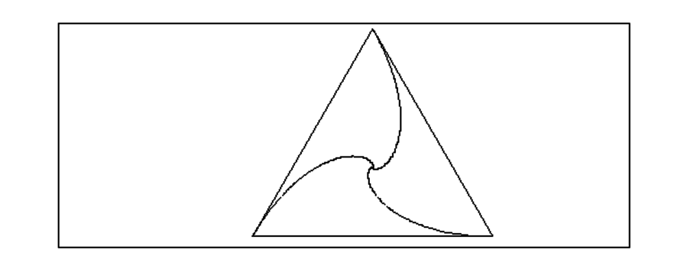
Résolution d’un système d’équations différentielles
On peut aussi résoudre le système :
Z′=A*Z et au temps t=0, Z(0)=[0,1,1/2+i*√3 /2] avec
| A:= | ⎡ ⎢ ⎢ ⎣ |
| ⎤ ⎥ ⎥ ⎦ |
On tape (on suppose que Complexe est coché dans la configuration du CAS ):
A:=[[-1,1,0],[0,-1,1],[1,0,-1]]
P,B:=jordan(A)
On obtient pour P :
[[1,(-i)*sqrt(3)-1,(i)*sqrt(3)-1],[1,2,2],[1,(i)*sqrt(3)-1,
(-i)*sqrt(3)-1]]
On obtient pour B :
[[0,0,0],[0,((i)*sqrt(3)-3)/2,0],[0,0,((-i)*sqrt(3)-3)/2]]
On tape :
V0:=simplify(inv(P)*[0,1,1/2+i*sqrt(3)/2])
On obtient :
[((i)*sqrt(3)+3)/6,((-i)*sqrt(3)+3)/12,0]
On tape :
V:=V0*exp(B*t)
On obtient :
[1/6*((i)*sqrt(3)+3),1/12*exp(((i)*sqrt(3)*t-3*t)/2)*((-i)*sqrt(3)+3),0]
On tape :
Z:=P*V
ZA:=simplify(Z[0]);ZB:=simplify(Z[1]);ZC:=simplify(Z[2]);
plotparam(ZA,t=0..4),plotparam(ZB,t=0..4),plotparam(ZC,t=0..4),
triangle_equilateral(0,1)
On obtient la figure précédente.
Dans le cas du triangle ABC avec
A:=point(0);B:=point(10);C:=point(i*10), le système à
resoudre est le même c’est juste la condition initiale qui change
(V0:=inv(P)*[0,1,i]) et les 3
insectes convergent vers le centre de gravité K du triangle ABC.
On tape (on suppose que Complexe est coché dans la configuration du CAS ):
A:=[[-1,1,0],[0,-1,1],[1,0,-1]]
P,B:=jordan(A)
V0:=simplify(inv(P)*[0,1,i])
On obtient :
[(1+i)/3,(sqrt(3)+2-i)/12,(-sqrt(3)+2-i)/12]
V:=V0*exp(B*t)
On obtient :
[(1+i)/3,1/12*exp(((i)*sqrt(3)*t-3*t)/2)*(sqrt(3)+2-i), 1/12*exp(((-i)*sqrt(3)*t-3*t)/2)*(-sqrt(3)+2-i)]
On tape :
Z:=P*V
ZA:=simplify(Z[0]);ZB:=simplify(Z[1]);ZC:=simplify(Z[2]);
plotparam(ZA,t=0..4),plotparam(ZB,t=0..4),plotparam(ZC,t=0..4),
triangle(0,1,i)
On obtient la figure :
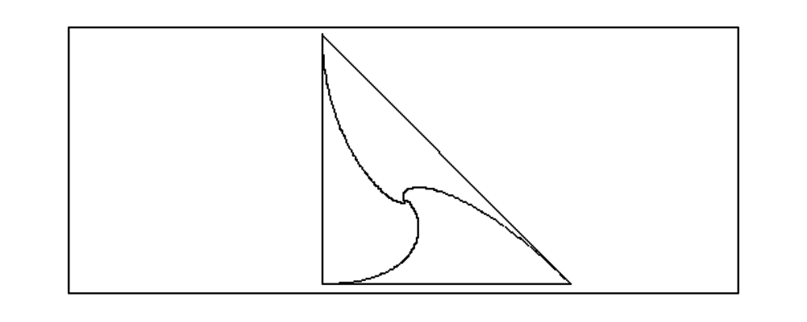
Le dessin des triangles
On dessine le triangle équilatéral ABC puis le triangle
A1B1C1 avec :
A1=A+evalf((B−A)/10),
B1=B+evalf((C−B)/10) et
C1=C+evalf((A−C)/10).
puis on recommence le même processus avec A1B1C1...
On tape :
triop0(a,b):={
local L,C,c;
L:=triangle_equilateral(point(a),point(b),C);
c:=evalf(affixe(C));
si evalf(abs(b-a))<1 alors return L; fsi;
a:=a*0.9+b*0.1;
b:=b*0.9+c*0.1;
L:=L,triop0(a,b);
return L;
}:;
On tape :
triop0(0,10)
On obtient :
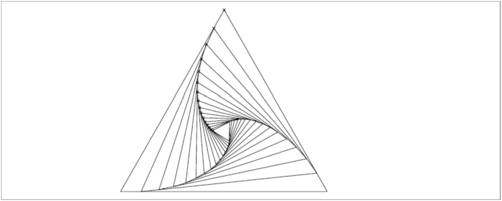
On peut tourner dans l’autre sens : on dessine le triangle équilatéral
ABC puis le triangle
A1B1C1 avec :
A1=A+evalf((C−A)/10),
B1=B+evalf((A−B)/10) et
C1=C+evalf((B−C)/10).
puis on recommence le même processus avec A1B1C1...
On tape :
triop(a,b):={
local L,C,c,a0;
L:=triangle_equilateral(point(a),point(b),C);
c:=evalf(affixe(C));
si evalf(abs(b-a))<1 alors return L; fsi;
a0:=a;
a:=a*0.9+c*0.1;
b:=b*0.9+a0*0.1;
L:=L,triop(a,b);
return L;
}:;
On tape :
triop(0,10)
On obtient :
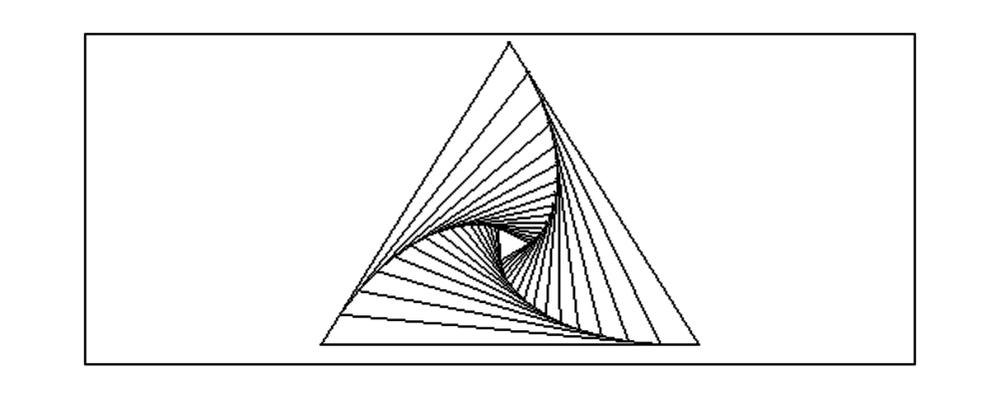
On tape si on choisit un triangle ABC quelconque :
triopa(a,b,c):={
local L,a0,b0;
L:=triangle(point(a),point(b),point(c));
si (evalf(abs(b-a))<1) alors return L; fsi;
a0:=a;
b0:=b;
a:=a+evalf((c-a)/10);
b:=b+evalf((a0-b)/10);
c:=c+evalf((b0-c)/10);triopa(0,10,i*10);K:=point((10+10*i)/3)
L:=L,triopa(a,b,c);
return L;
}
:;
On tape :
triopa(0,10,i*10);K:=point((10+10*i)/3)
On obtient :
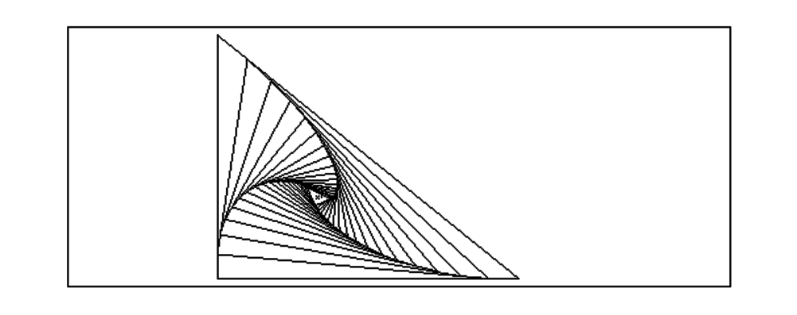
On fait faire des rotations à ces triangles
Dans triops on fait 6 rotations de triop alors que dans triops0 on
fait 3 rotations du losange formé par triop0(a,b) et triop(b,a)
0n tape :
triops(A,B):={
local L,j,a,b;
a:=affixe(A);
b:=affixe(B);
L:=triop0(a,b);
pour j de 1 jusque 5 faire
B:=rotation(A,pi/3,B);
b:=affixe(B);
L:=L,triop(a,b);
fpour;
return L;
}:;
triops0(A,B):={
local L,j,a,b;
a:=affixe(A);
b:=affixe(B);
L:=NULL;
pour j de 1 jusque 3 faire
L:=L,triop0(a,b),triop(b,a);
B:=rotation(A,pi/3,B);
b:=affixe(B);
fpour;
return L;
}:;
triops1(A,B):={
local L,j,a,b,c,C;
a:=affixe(A);
b:=affixe(B);
L:=NULL;
pour j de 1 jusque 3 faire
triangle_equilateral(B,A,C);
c:=affixe(C);
L:=L,triop0(a,b),triop(b,a),,triop0(a,c);
B:=rotation(A,2*pi/3,B);
b:=affixe(B);
fpour;
return L;
}:;
On tape :
triops(point(0),point(10))
On obtient :
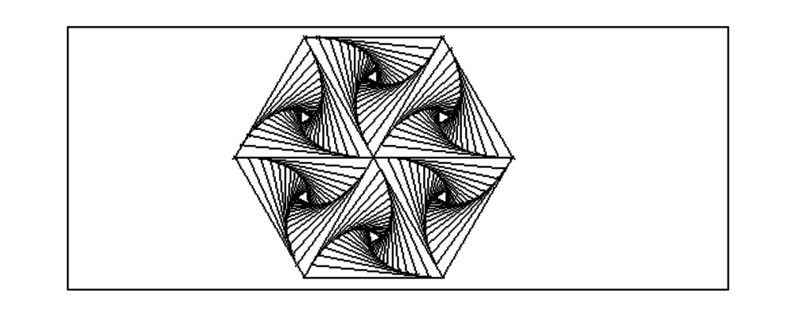
On tape :
triops0(point(0),point(10))
On obtient :
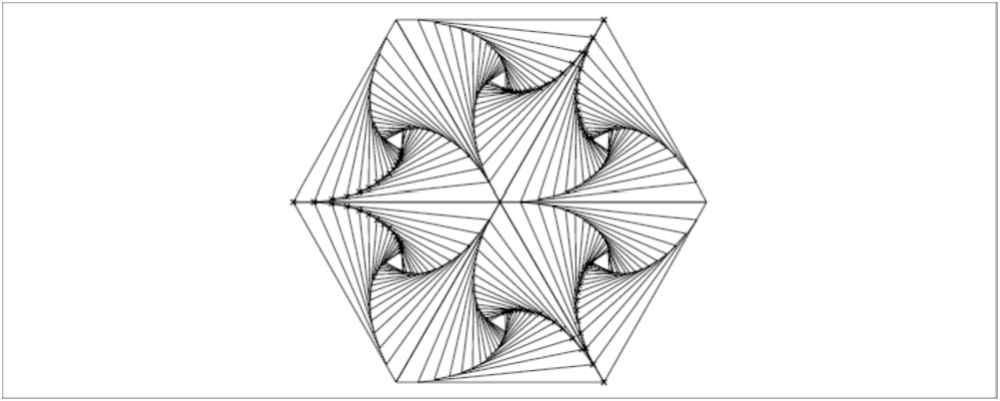
On tape :
triops1(point(0),point(10))
On obtient :
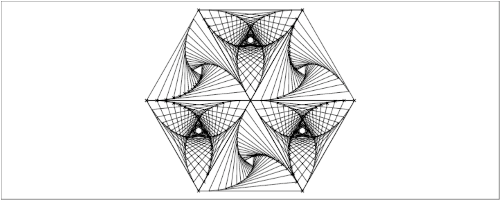
0n tape :
triopas(A,B,C):={
local L,j,F,a,b,c;
a:=affixe(A);
b:=affixe(B);
c:=affixe(C);
L:=triopa(a,b,c);
pour j de 1 jusque 7 faire
A:=rotation(B,pi/4,A);
C:=rotation(B,pi/4,C);
a:=affixe(A);
c:=affixe(C);
L:=L,triopa(a,b,c);
fpour;
return L;
}:;
On tape :
triopas(point(0),point(10),point(10*i))
On obtient :
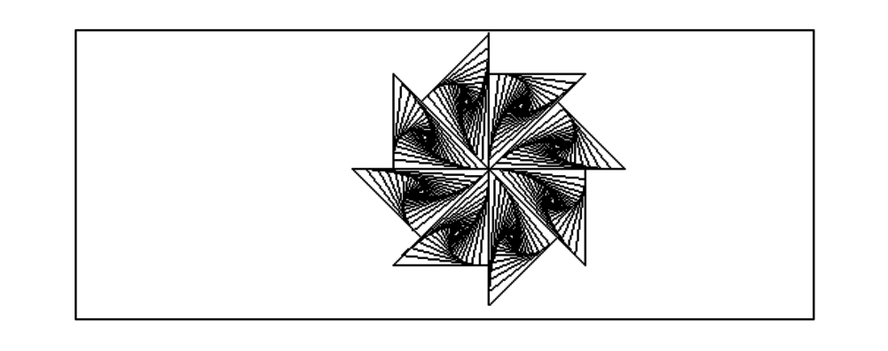
Avec le triangle point(0),point(10),point(i*10*tan(2*pi/7)),
on tape :
triopas7(A,B,C):={
local L,j,F,a,b,c;
a:=affixe(A);
b:=affixe(B);
c:=affixe(C);
L:=triopa(a,b,c);
pour j de 1 jusque 6 faire
A:=rotation(B,2*pi/7,A);
C:=rotation(B,2*pi/7,C);
a:=affixe(A);
c:=affixe(C);
L:=L,triopa(a,b,c);
fpour;
return L;
}:;
Puis, on tape :
triopas7(point(0),point(10),point(i*10*tan(2*pi/7)));
On obtient :
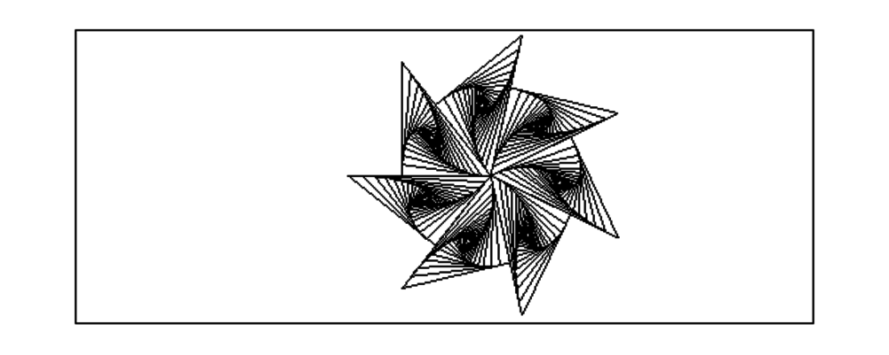
On peut aussi faire la mêmes chose ave des losanges
On tape :
losop(a,b,c,d):={
local L;
L:=quadrilatere(point(a),point(b),point(c),point(d));
si evalf(abs(b-a))<1 alors return L; fsi;
a:=a*0.9+b*0.1;
b:=b*0.9+c*0.1;
c:=c*0.9+d*0.1;
d:=d*0.9+a*0.1;
L:=L,losop(a,b,c,d);
return L;
}:;
On tape :
losop(0,10,5+i*sqrt(3)*5,-5+i*sqrt(3)*5)
On obtient :
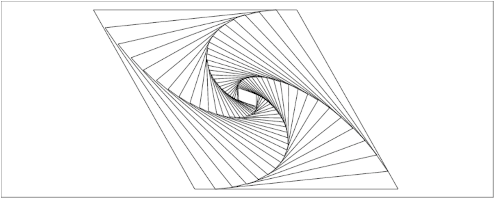
On tape :
losop(10,0,-5+i*sqrt(3)*5,5+i*sqrt(3)*5),
losop(10,0,-5-i*sqrt(3)*5,5-i*sqrt(3)*5),
losop(-5+i*sqrt(3)*5,0,-5-i*sqrt(3)*5,-10)
On obtient :
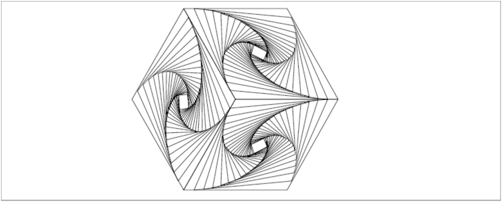
L’utilisateur choisit un entier n. Sur le cercle de de centre d’affixe a et de rayon r on dessine le cercle et les n points d’affixe ak:=r*exp(2.*i*k*pi/n) pour k=0..n-1. On recommence pour chaque k avec des cercles de de centre d’affixe ak et de rayon r/2. Et ainsi de suite à partir des points obtenus en divisant à chaque étape le rayon par 2. Écrire un programme qui réalise p étapes de ce processus. On tape :
cercles(a,r,n,p):={
local P,L,k,j;
P:=NULL;
si p<1 alors retourne NULL fsi;
pour k de 0 jusque n-1 faire
P:=P,point(a+r*exp(2.*i*pi*k/n),affichage=p+epaisseur_point_2);
fpour;
L:=cercle(a,r),P;
pour j de 0 jusque n-1 faire
L:=L,cercles(affixe(P[j]),r/2,n,p-1);
fpour;
retourne L;
}:;
On tape :
cercles(0,20,5,4)
On obtient :

Une tour de Hanoï est composée de p disques de rayons différents que
l’on numérote de 1 à p selon l’ordre croissant des rayons (le plus petit
disque a le numéro 1 et le plus gros le numéro p).
On dispose de 3 plots numérotés de 1 à 3.
Au départ les disques sont empilés selon l’ordre croissant sur le plot 1.
Le jeu consiste à reconstituer la tour sur le plot 2, en se servant du plot 3
comme plot intermédiaire, en déplacant les disques un à un, et en posant
toujours un disque sur un disque plus petit que lui.
Par exemple, on peut mettre le dique 2 sur le disque 5, mais pas sur le disque
1.
On veut écrire un programme qui imprime ce qu’il faut faire comme
manipulations : ce sera tour(a,b,c,p), où p représente le
nombre de disques, où a représente le plot
de départ, où b représente le plot d’arrivée, et où c
représente le plot intermédiaire.
On tapera alors par exemple :
tour(1,2,3,4)
si on a une tour de 4 disques sur le plot 1, et qu’on veut la reconstituer
sur le plot 2 par l’intermédiaire du plot 3.
Les manipulations à faire sont récursives, en voici les étapes :
On tape dans un niveau éditeur de programmes (que l’on ouvre avec Alt+p), puis on le teste et on le valide avec OK :
//tour(1,2,3,4) (tour de hanoi)
//depacement des p disques (de numero 1..p du plus petit au plus grand)
//de a vers b en passant par c
tour(a,b,c,p) :={
if (p==0) return 0;
tour(a,c,b,p-1);
print("deplacer le disque "+p+" de "+ a + " vers "+ b);
tour(c,b,a,p-1);
return 0;
}:;
On tape :
tour(1,2,3,4)
On obtient :
deplacer le disque 1 de 1 vers 3 deplacer le disque 2 de 1 vers 2 deplacer le disque 1 de 3 vers 2 deplacer le disque 3 de 1 vers 3 deplacer le disque 1 de 2 vers 1 deplacer le disque 2 de 2 vers 3 deplacer le disque 1 de 1 vers 3 deplacer le disque 4 de 1 vers 2 deplacer le disque 1 de 3 vers 2 deplacer le disque 2 de 3 vers 1 deplacer le disque 1 de 2 vers 1 deplacer le disque 3 de 3 vers 2 deplacer le disque 1 de 1 vers 3 deplacer le disque 2 de 1 vers 2 deplacer le disque 1 de 3 vers 2
La liste l est une liste de nombres tous différents.
On écrit la fonction circulaire(l) qui renvoie la liste obtenue
à partir de l en renvoyant le début de la liste l à la
fin de l.
//l:=[1,2,3]; circulaire(l)
//renvoie la liste l ou la tete est mise a la fin.
circulaire(l):={
return concat(tail(l),l[0]);
};
On écrit la fonction permcir(l) qui renvoie la liste des permutations circulaires obtenues à partir de l. On écrit cette fonction récursivement en renplacant l par circulaire(l). Il faut un test d’arrêt pour ce parcours, pour cela on a besoin d’un paramètre supplementaire qui sera ld : c’est une liste de référence égale à l au départ et qui n’est pas modifiée. On s’arrête quand circulaire(l)==ld, c’est à dire quand on retrouve la liste de départ. On utilise une variable locale lr égale à la liste à renvoyer.
// utilise circulaire, l:=[1,2,3];permcir(l,l);
//renvoie les permutations circulares de l
//variable locale lr la liste resultat
// ld liste reference de depart
permcir(l,ld):={
local lr;
if (circulaire(l)==ld) return [l];
lr:=[l];
lr:= append(lr,op(permcir(circulaire(l),ld)));
return lr;
};
On peut supprimer la variable locale lr et la fonction
circulaire.
On écrit alors la fonction permcc(l) qui renvoie la liste des
permutations circulaires obtenues à partir de l.
Ici, on utilise un autre test d’arrêt, on a toujours besoin d’un
paramètre supplementaire qui sera ld : c’est une liste de
référence égale à l au départ et qui est modifiée, sa taille
diminue de 1 à chaque appel récursif.
On s’arrête quand ld==[], c’est à dire quand on a fait autant
d’appels que la taille de l.
//l:=[1,2,3];permcc(l,l);
//renvoie les permutations circulares de l
//sans variable locale, ld liste reference de depart
permcc(l,ld):={
if (ld==[]) return [];
return [l,op(permcc(concat(tail(l),l[0]),tail(ld)))];
};
Comme il faut 2 paramètres pour écrire la fonction récursive permcc, on écrit la fonction finale permutation_circ qui utilise permcc :
//l:=[1,2,3];permutation_circ(l);
//renvoie les permutations circulares de l
//utilise permcc
permutation_circ(l):={
return permcc(l,l);
};
On tape :
permutation_circ([1,2,3])
On obtient :
[[1,2,3],[2,3,1],[3,1,2]]
La liste l est une liste de nombres tous différents.
1/ En faisant n=size(l) appels récursifs.
Les fonctions que l’on va écrire vont utiliser la fonction echange.
//echange ds l les elements d'indices j et k
echange(l,j,k):={
local a;
a:=l[j];
l[j]:=l[k];
l[k]:=a;
return l;
}:;
On peut décrire l’arbre des permutations de la liste l :
à partir de la racine on a n=size(l) branches. Chaque branche
commence respectivement par chacun des éléments de la liste l.
On va donc parcourir cet arbre de la racine (nœud de niveau 0) aux
différentes extrémités, en renvoyant la liste des branches parcourues
pour arriver à cette extrémité.
On va parcourir cet arbre en parcourant les n branches. On numérote ces n
branches par p=1..n et le niveau des nœuds q=0..n−1.
On aura donc n appels récursifs.
Chaque branche p (p=1..n) peut être considérée à leur tour comme un
arbre ayant n−1 branches. La branche p aboutit aux permutations qui laissent
invariant le p-ième élément de l (l[p−1]).
C’est cet élément que l’on va échanger avec l[0] pour que chaque
branche p laisse invariant l’ élément l[0].
On sait que l’on est arrivé au bout de la branche, quand on se trouve au
nœud de niveau n−1, dans ce cas la permutation chechée est l (c’est
la permutation obtenue à partir de l en laissant ces n−1 premiers
éléments invariants).
On utilise une variable locale lr, égale à la liste à renvoyer et
un paramètre k, pour que permus(l,k) renvoie toutes les
permutations de l qui laissent invariant les k premiers éléments de
l. On tape :
//utilise echange et la variable locale lr (liste resultat)
//permus(l,k) laisse invariant les k premiers elements de l
//permus([1,2,3,4],0); renvoie toutes les permutations de l
permus(l,k):={
local lr,j;
if (k==size(l)-1) return [l];
lr:=[];
for (j:=k;j<size(l);j++){
l:=echange(l,k,j);
lr:=[op(lr),op(permus(l,k+1))];
l:=echange(l,j,k);
}
return lr;
}:;
On n’est pas obligé de remettre la suite l à sa valeur de départ
pour recommencer l’itération puisque le premier échange dans l’itération
revient à transformer l en la liste où on a mis son j-ième
élément en tête (j=0..n−1). La liste résultat ne sera alors pas dans
le même ordre. Si on veut avoir la liste dans l’ordre lexicographique, il ne
faut pas mettre la deuxième instruction echange. En effet :
sans la deuxième instruction echange, on échange
0 et 1 pour j=1 ([1,0,2..]) puis 0 et 2 pour j=2 ([2,0,1..]) etc
sans la deuxième instruction echange, on échange
0 et 1 ([1,0,2..]) puis, 1 et 0 ([0,1,2..]) pour j=1, puis
0 et 2 ([2,1,0..]) puis, 2 et 0 ([0,1,2..]) pour j=2 etc
//permuts([1,2,3,4],0) utilise echange
//la 2ieme instruction echange est inutile
permuts(l,k):={
local lr,j;
if (k==size(l)-1) return [l];
lr:=[];
for (j:=k;j<size(l);j++){
l:=echange(l,k,j);
lr:=[op(lr),op(permuts(l,k+1))];
}
return lr;
}:;
Comme il faut 2 paramètres pour écrire la fonction récursive permuts, on écrit la fonction permutation qui utilise permuts:
//l:=[1,2,3];permutation(l);
//renvoie toutes les permutations de l
//utilise permuts
permutation(l):={
return permuts(l,0);
};
On tape :
permutation([1,2,3])
On obtient :
[[1,2,3],[1,3,2],[2,1,3],[2,3,1],[3,1,2],[3,2,1]]
On peut aussi écrire une autre fonction récursive ayant comme paramètre
ld et lf. ld contient les premières valeurs de l qui
seront inchangées dans la permutation et lf contient les valeurs
restantes de l, celles qui restent à permuter. On remarquera que le
résultat mis dans res est ici une séquence.
//au debut ld=[] et lf=l,
//groupe_s([],l) renvoie toutes les permutations de l
groupe_s(ld,lf):={
local j,n,res;
n:=size(lf);
res:=NULL;
if (n==1)
return concat(ld,lf);
for (j:=0;j<n;j++){
res:=res,groupe_s(append(ld,lf[0]),tail(lf));
// permutation circulaire
lf:=append(tail(lf),lf[0]);
}
return res;
};
Et la fonction groupesym qui utilise la fonction récursive groupe_s :
//utilise groupe_s //groupesym(l) renvoie toutes les permutations de l groupesym(l):=return(groupe_s([],l));
2/ En faisant 2 appels récursifs.
Cet algorithme est surtout fait pour des langages qui n’ont pas de boucle
for.
Les fonctions vont utiliser la fonction circulaire (pour plus de
clareté), puis on remplacera circulaire(l) par
concat(tail(l),l[0]).
//l:=[1,2,3]; circulaire(l)
//renvoie la liste l ou la tete est mise a la fin.
circulaire(l):={
return concat(tail(l),l[0]);
};
On peut décrire l’arbre des permutations de la liste l :
à partir de la racine on a n=size(l) branches. Chaque branche
commence par chacun des éléments de la liste l.
On va parcourir cet arbre, en parcourant la premiére branche, puis en
considérant qu’il reste à parcourir un arbre de n−1 branches.
On aura donc 2 appels récursifs.
Pour le parcours de la première branche, il faut connaitre la liste des
éléments qui nous a permis d’arriver à un nœud donné, c’est cette
liste que l’on met dans ldl, l contenant les éléments qu’il
faut encore permuter. On s’arrête quand l=[], et le résultat est
[ldl].
Pour le parcours des n−1 branches restantes, on change pour chaque branche
la liste à permuter en circulaire(l).
Il faut un test d’arrêt pour ce parcours, pour cela on a besoin d’un
paramètre supplementaire qui sera ld (liste de référence égale
à l au départ) dans permss ou qui sera
n (longueur de l au départ) dans permss1.
On écrit permss :
// utilise circulaire, l:=[1,2];permss([],l,l);
//ldl=debut de l, l=liste a permuter,
//ld=liste de reference (=l au debut)
permss(ldl,l,ld):={
if (l==[]) return [ldl];
if (ld==[]) return ld;
return [op(permss(concat(ldl,l[0]),tail(l),tail(l))),
op(permss(ldl,circulaire(l),tail(ld)))];
};
On écrit permss1 qui utilise comme paramètre n qui
représente la longueur de la liste qui reste à permuter (n=size(l) au départ) :
//utilise circulaire, l:=[1,2,3,4];permss1([],l,size(l));
//ldl=debut de l, l=liste a permuter, n=size(l) au debut
permss1(ldl,l,n):={
if (l==[]) return [ldl];
if (n==0) return [];
return [op(permss1(concat(ldl,l[0]),tail(l),size(tail(l)))),
op(permss1(ldl,circulaire(l),n-1))];
};
On a aussi écrit la fonction permss2 contenant une variable locale lr qui est la liste à renvoyer et qui donne un algorithme plus lisible.
//l:=[1,2];permss2([],l,l);
//ldl=debut de l, l=liste a permuter,
//ld=liste de reference (=l au debut)
// lr liste a renvoyer en variable locale
permss2(ldl,l,ld):={
local lr;
if (l==[]) return [ldl];
if (ld==[]) return [];
lr:=permss2(concat(ldl,l[0]),tail(l),tail(l));
lr:=append(lr,op(permss2(ldl,concat(tail(l),l[0]),tail(ld))));
return lr
};
puis la fonction permute qui utilise permss2 :
//utilise permss2,
//permute(l) renvoie toutes les permutations de l
permute(l):={
return permss2([],l,l);
};
On tape :
permute([1,2,3])
On obtient :
[[1,2,3],[1,3,2],[2,3,1],[2,1,3],[3,1,2],[3,2,1]]